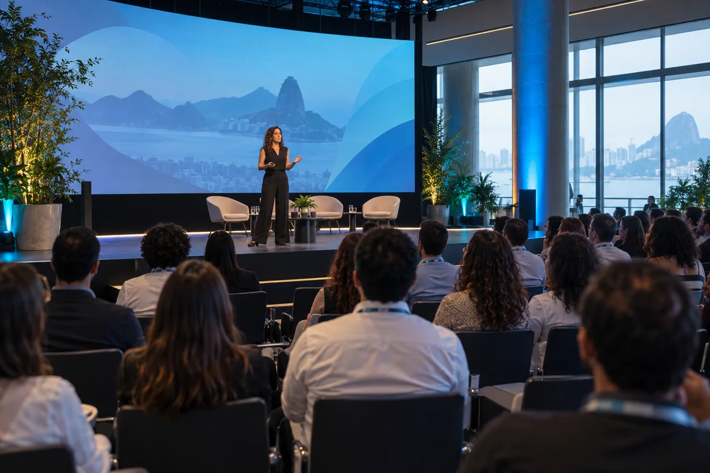
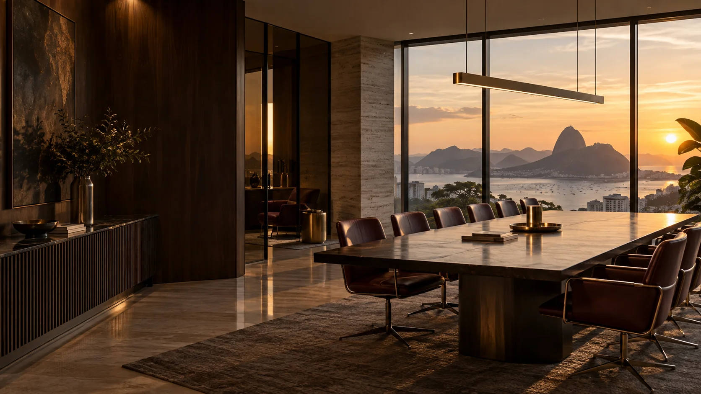

ANIVERSÁRIO · 18 SET
Camila Souza
Pessoas & Cultura
BEM-VINDA AO SEU PONTO DE ENCONTRO
Olá, Ana. Encontre o que precisa, compartilhe o que sabe e acompanhe tudo que movimenta a nossa equipe.
Facilite seu dia a dia ↗

MENOS CLIQUES, MAIS TEMPO
Nenhum serviço encontrado. Tente “férias”, “ponto” ou “suporte”.
CUIDADO COM VOCÊ
Orientação clara para cada momento da sua jornada.
Dúvidas sobre benefícios ou sua jornada? Encontre o caminho certo para pedir apoio.
NOSSA CULTURA EM MOVIMENTO
O programa Conexões aproxima pessoas de diferentes áreas para resolver desafios reais. Nesta edição demonstrativa, o foco é simplificar a passagem de informações entre equipes.

CONHECIMENTO QUE CIRCULA
Guias para trabalhar com mais clareza e segurança. Conteúdos ilustrativos, organizados por necessidade.
RESERVE UM ESPAÇO NA AGENDA
Encontros curtos, conversas práticas e espaço para perguntas. Experimente a inscrição em um dos eventos da nossa agenda fictícia.
PROGRAMA CONECTA · SETEMBROQUEM FAZ ACONTECER
Conheça seus pontos de apoio e celebre as pessoas da equipe. Todos os perfis são fictícios.
Pessoas & Cultura

Tecnologia & Serviços
Operações
FIQUE POR DENTRO
PODE CONTAR COM A GENTE
Descreva sua necessidade. Vamos ajudar a encontrar o caminho.